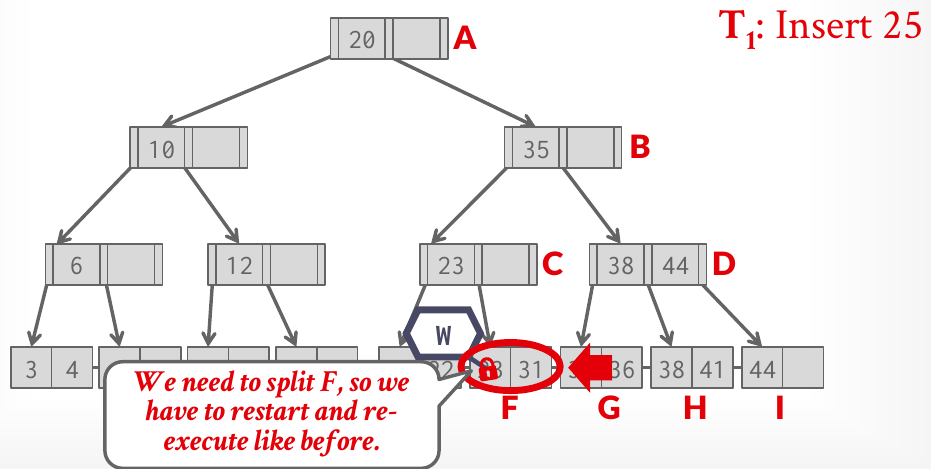

Database Internals in Go · Unit 4 · Lesson 9
P2.9 Concurrency: Latch Crabbing and Optimistic Latching
Make Insert and Remove concurrent: try an optimistic descent with read guards and a single leaf write guard, fall back to pessimistic write crabbing that releases the header page and every safe ancestor early, and pass the concurrency tests and the full suite under the race detector.
Your tree is correct, but every insertion and deletion starts with a write guard on the header page and keeps it to the end. That one latch is taken by every writer, which makes it a global latch, and the writeup forbids one: "you may not latch the whole index and only unlatch when operations are done." This last stage applies Lecture #10's optimistic crabbing to your page guards, so that writers working in different leaves can run at the same time. It changes how Insert and Remove latch; the splits, merges and tombstone rules stay as they are.
Unit 3, Lesson 8: under optimistic crabbing, a writer reaches an unsafe leaf with read latches on the path above it. Why does a Go implementation restart from the root instead of upgrading those read latches to write latches?
Unit 2, Lesson 7: in what order does a page guard's Drop release what it holds, and why?
Unit 4, Lesson 6: a merge leaves an internal root with a single child. What does Remove do?
What stage 9 asks for
The doc comment of BPlusTree, under "Latching (stage 9)", is the specification, and the tests check each part of it:
GetValueand the iterator take read guards from the header page down, "dropping a page's guard as soon as its child is guarded". Your stage-2 and stage-8 code already does this.InsertandRemove"first descend optimistically: read guards on the header page and the internal pages, and a write guard on the leaf only. If the leaf is safe (the change cannot split it or make it underflow), they change it and return. Such an insertion or deletion takes exactly one write guard, and the tests count them through theTracedBufferPoolManager."- "Otherwise they start over pessimistically: write guards from the header page down, dropping the guards of every ancestor (the header page included) as soon as the current page is safe."
- "Always take latches from the header page towards the leaves, release them in the same order, and never take the same latch twice in one goroutine."
Safe has a precise meaning in this course, one per operation:
| Safe for an insertion | Safe for a deletion | |
|---|---|---|
| Leaf | one more entry keeps it below LeafMaxSize: Size() + 1 < LeafMaxSize | more than MinSize entries; or its tombstone buffer still has room, since the deletion only adds a tombstone |
| Internal page | fewer than InternalMaxSize children | more than MinSize children |
| Root | as above | a leaf with more than one entry; an internal page with more than two children |
These follow from the split and merge rules of stages 3 to 6. A leaf splits when it reaches LeafMaxSize, so it is safe if it won't reach it. An internal page splits when a child arrives while it holds InternalMaxSize, so it is safe below that. A non-root page is repaired below MinSize, so it is safe above it. A root leaf is only deleted when it empties, and an internal root only collapses when it drops to one child.
Context, Release and the header page
The pre-built Context is BusTub's Context class in Go. It holds HeaderPage (the header's write guard, or nil), RootPageID, WriteSet (write guards from the root down) and ReadSet. BusTub releases a context in its destructor; Go has none, so Release does it: "the header page first, then WriteSet and ReadSet from front to back, so latches are released from the top of the tree down, as the writeup asks." It can be called twice. Create a context per operation, with defer ctx.Release(), and every return path is covered.
Releasing ancestors early uses the same structure. When the page at the back of WriteSet turns out to be safe, nothing above it can change any more, so drop the header guard and set HeaderPage to nil, then drop every guard in WriteSet except the last, top first, and keep the last one alone in the slice. The writeup's tips describe exactly this ("To unlock the header page, simply set header_page_ to std::nullopt. To unlock other pages, pop from the write_set_ and drop"), and its pitfalls give the order: "every thread will always acquire latches from the header page to the bottom. When you release latches, make sure you release them in the same order (from the header page to the bottom)." Lecture #10's notes add why: the latches higher up block a larger part of the tree.
The header page deserves its own rule because it holds the root ID, and four events change it: the first insertion into an empty tree, a root split, an internal root collapsing, and the last entry leaving a root leaf. Each of them must hold the header's write guard, so:
- A pessimistic operation takes the header's write guard first and keeps it only until the root turns out to be safe. A safe root can't split or collapse, so the root ID can't change.
- An optimistic operation takes only a read guard on the header, and only until it holds the root. An empty tree can't be handled optimistically, because the first insertion must create a root: report "not done" and go pessimistic.
- A lookup drops the header's read guard as soon as it holds the root.
TestBPlusTreeConcurrentBlockedLeafDoesNotBlockOtherscatches a lookup that keeps it: while that lookup waits for a latched leaf, a removal elsewhere that needs the header's write guard would wait behind it.
#10 Latching in Data Structures, "Summary and conclusion" (1:18:04), slides 43–44: the Project 2 hints, including making splits and merges work single-threaded first, and protecting the root page ID.
The optimistic descent in Go
Slide 30 states the optimistic protocol: "Set latches as if for search, get to leaf, and set W latch on leaf." In Go there is a wrinkle: a page's type is stored in the page, so you only learn that a child is a leaf after you have latched it, and you latched it for reading. sync.RWMutex can't upgrade that latch. The way out is to let go of the leaf's read guard and take a write guard on the same page while you still hold its parent's read guard.
- Read-guard the header page and read the root ID. If the tree is empty, drop it and report "not done".
- Read-guard the current page. If it is internal, find the child, drop the parent's guard (the header page, the first time), and continue from the child.
- If it is a leaf, drop its read guard, take a write guard on the same page ID, and only then drop the parent's read guard.
- Decide at the leaf. If the operation finds nothing to change (a duplicate key, a key to revive, an absent or tombstoned key to remove), or the change keeps the leaf safe, do it, drop the leaf and return "done". Otherwise drop the leaf and report "not done".
Step 3 is safe because of the parent's read guard. Any split or merge that could replace or empty the leaf needs a write latch on its parent (or on the header page, for a root leaf), and it can't get one while you hold a read latch there. So the page you write-latch is still the leaf that covers your key. Step 3 also respects the rule against taking a latch twice: the leaf's read guard is dropped before its write guard is requested. Holding both, in one goroutine, would wait forever.
The cost is one extra read guard per optimistic operation. The tests only require that an optimistic operation takes some read guards and exactly one write guard: TestBPlusTreeConcurrentOptimisticInsert and ...OptimisticDelete, BusTub's own tests, compare the wrapper's Reads() and Writes() before and after.

Insert runs the pessimistic descent (Lecture #10, slide 32).#10 Latching in Data Structures, "Optimistic latching" (52:09), slides 28–32: the root bottleneck, the optimistic protocol, and the Delete 38 and Insert 25 examples.
The pessimistic descent and its siblings
The pessimistic descent is the one you have used since stage 3, with early release added: after write-guarding each page and appending it to WriteSet, test it for safety and release the ancestors if it passes. What remains in the context when the descent reaches the leaf is exactly what the operation may still change: the leaf and the unsafe pages above it, up to the deepest safe one, plus the header page if the root itself is unsafe. Your split and merge code finds parents at the back of WriteSet as before; it only has to stop expecting the whole path. The context's comment suggests a check: before splitting the root, make sure HeaderPage is not nil, and before changing a parent, make sure the write set still holds one.
A deletion also latches a sibling, which isn't on the path. It does so while holding the parent's write guard, so no other operation can come down to either child, and any goroutine already holding the sibling is one that needs nothing more above it: it finishes and lets go. TestBPlusTreeConcurrentPessimisticReleasesAncestors makes one wait there. Its tree has a root with three children, each with three leaves at their minimum, leaf max size 4 and internal max size 4. Removing 10 makes the leaf [10,20] underflow. The test holds a read guard on the sibling [30,40], so the removal blocks there, and while it waits, a lookup and an insertion in another subtree must finish. They can, because the root and the parent both have three children, more than the minimum of 2, so the removal released the header page at the root and the root at the parent.
The race detector finds one kind of concurrency bug. -race reports two goroutines touching the same memory without synchronization, for example a field added to BPlusTree that every operation reads and writes, or a page's bytes changed through a read guard's Data(). It says nothing about a latch held too long or taken in the wrong order; those show up as hangs. The tests bound every wait (10 seconds for a single operation, 60 seconds for BusTub's concurrent rounds) and report which operation didn't finish, so a deadlock fails with a message instead of a frozen terminal. A field in BPlusTree that every operation latches would also be a global latch, which the struct's comment forbids.
The stage-9 tests
| Test | What it checks |
|---|---|
...InsertTest1, ...InsertTest2, ...DeleteTest1, ...DeleteTest2, ...MixTest1, ...MixTest2 | BusTub's concurrent tests: goroutines inserting, removing and looking up the same or interleaved keys, each run without tombstones and with a buffer of 3, then checked by lookups and a scan. Iteration counts are lower than BusTub's (10 instead of 50, 5 instead of 20). |
...OptimisticInsert, ...OptimisticDelete | BusTub's: a safe insertion or deletion takes more than 0 read guards and exactly 1 write guard. |
...OptimisticTakesReadLatches | The test holds read guards on the header page and every internal page; a safe insertion, a safe removal, a duplicate insertion and a lookup must still finish. |
...BlockedLeafDoesNotBlockOthers | The test write-latches one leaf, and a lookup and a removal wait there; operations elsewhere must finish, including a removal that underflows and so needs the header's write guard. |
...PessimisticReleasesAncestors | The removal above, waiting for a sibling, must have released the header page and the root. |
...Stress | 8 goroutines insert, remove and look up keys of their own and others', with and without tombstones; then the tree, its live keys, a scan and the pin counts are checked. |
Check your understanding
A tree has leaf max size 4 and internal max size 3, and some leaf holds 2 entries. An insertion into that leaf runs. How many write guards does TestBPlusTreeConcurrentOptimisticInsert expect it to take?
No tombstones, leaf max size 4 (min size 2). Which of these removals has to go pessimistic?
In TestBPlusTreeConcurrentPessimisticReleasesAncestors, the root and the parent of leaf [10,20] each have 3 children, with internal max size 4. The removal of 10 is waiting for the sibling [30,40]. Which guards does it hold?
On the optimistic path, the descent reaches a leaf with a read guard. It drops that guard and takes a write guard on the same page. Why must it still hold the parent's read guard while it does so?
A GetValue keeps the header page's read guard for its whole descent and drops it at the end. A test write-latches one leaf, and the lookup waits there. What else stops working until the leaf is released?
Build it: concurrent writers (stage P2.9)
You edit btree/b_plus_tree.go: Insert and Remove and their helpers. Run commands from go_db_internals/intro_to_db. The rules, in plain words:
- First the optimistic descent: read guards on the header page and the internal pages, a write guard on the leaf only, exactly one write guard in all. Change the leaf only if it stays safe.
- Otherwise drop everything and run the pessimistic descent: write guards from the header page down, releasing the header page and every ancestor as soon as the current page is safe.
- Safe: see the table above. A leaf with room in its tombstone buffer is always safe for a deletion.
- Latch from the header page down, release top-down, never take a latch you already hold, and no field in
BPlusTreethat every operation latches.
-
What to think about
Which code in your split and merge paths assumes that the whole path, or the header page, is still held? After an early release, where is the parent of the back of the write set, and is it always there when it is needed?
The approach
Write two predicates from the table, one for insertion and one for deletion, that take the page and whether it is the root. In both descents, after appending a page's guard to
WriteSet, call a helper if the page is safe: it dropsctx.HeaderPage(setting it to nil) and every guard ofWriteSetbut the last, and leaves the slice holding only that last guard. Then audit the split and merge code: a level of the write set is now relative to whatever was kept, and the root can only change whileHeaderPageis non-nil. A panic on "parent not held" is a good assertion while you test.One key fragment
last := len(ctx.WriteSet) - 1 for _, g := range ctx.WriteSet[:last] { // top first g.Drop() } ctx.WriteSet = append(ctx.WriteSet[:0], ctx.WriteSet[last])Checkpoint: early releaseRun
go test -race -run '^TestBPlusTreeConcurrentPessimisticReleasesAncestors$' -timeout 120s ./btree/. Success printsok intro_to_db/btree. A descent that keeps every ancestor fails after 10 seconds withGetValue(150) while a removal waits for a sibling under another subtree did not return within 10s: it waits for a page latch that should be free (a guard that is never dropped, or a latch taken where it is not needed). Rerun stages 3 to 8 afterwards: early release is where split and merge code meets a write set shorter than it expected. -
What to think about
When do you learn that the current page is a leaf, and what latch do you hold on it then? What is the leaf's "parent" when the root is a leaf? Which outcomes of an insertion change nothing, or change the leaf without endangering it, and so can finish here?
The approach
Write a helper that returns the leaf's write guard, or nil for an empty tree. It read-guards the header page and then each page in turn; at an internal page it drops the parent's guard and moves to the child; at a leaf it drops the leaf's read guard, write-guards the same page ID, and then drops the parent's guard (the header page's, for a root leaf). In
Insert, call it first. Nil: go pessimistic. Otherwise, under the leaf's write guard: a duplicate returns false, a tombstoned key is revived, and a new key is inserted only ifSize() + 1 < LeafMaxSize; if it isn't, drop the leaf and go pessimistic.One key fragment
guard.Drop() // the leaf's read guard: never hold both leaf := t.bpm.WritePage(pageID, bufferpool.AccessUnknown) parent.Drop() // only now: the leaf can't have movedCheckpoint: optimistic insertionRun
go test -race -run '^TestBPlusTreeConcurrentOptimisticInsert$' ./btree/. Success printsok intro_to_db/btree. Without an optimistic path it fails withinserting 41 into a leaf with room took 0 read guards, want > 0: descend with read guardsand... took 5 write guards, want exactly 1 (on the leaf). -
What to think about
The safety test for a deletion depends on whether the leaf is the root. How can the optimistic helper tell you that? And with tombstones, which deletions can't change the leaf's size at all?
The approach
Let the optimistic helper also report whether the leaf is the root (it is if the header page was its parent). In
Remove: an empty tree, an absent key or a tombstoned key is done. If the leaf is safe for a deletion, delete as in stage 7 (tombstone or physical removal) and return. Otherwise drop the leaf and run the pessimistic removal. Then run the three tests that hold latches themselves: they hang, and fail after 10 seconds, if an optimistic operation takes a write latch above the leaf or a lookup keeps the header page.One key fragment
if leaf.tombCount > 0 && tombstones(leaf) < leaf.tombCount { return true // the deletion only adds a tombstone: always safe }Checkpoint: optimistic deletion and the latch-holding testsRun
go test -race -run '^TestBPlusTreeConcurrent(OptimisticDelete|OptimisticTakesReadLatches|BlockedLeafDoesNotBlockOthers)$' -timeout 120s ./btree/. Success printsok intro_to_db/btree. A write latch where a read latch belongs fails withInsert(85) into a leaf with room while the test holds read guards on the header and internal pages did not return within 10s. -
What to think about
A concurrency bug can pass once and fail the next run. When a test hangs, which goroutine holds the latch the others wait for, and does any goroutine hold a latch below one it is waiting for? When the race detector reports, which two stacks touched the memory, and which guard should have protected it?
The approach
Run with
-count=3to repeat the tests without the cache. For a hang, rerun the single test with-v -timeout 120safter the regex and read the goroutine stacksgo testprints: each blocked goroutine shows theReadPageorWritePageit waits in, and its caller shows which guards it still holds. The usual causes: a guard not dropped on one early-return path, a guard dropped and then still used through a view, a page latched twice by one goroutine, and a split or merge that reached for a parent the early release already dropped.One key fragment
go test -race -count=3 -run '^TestBPlusTreeConcurrent(InsertTest|DeleteTest|MixTest|Stress)' -timeout 300s ./btree/
From go_db_internals/intro_to_db, run:
go test -race -run '^TestBPlusTreeConcurrent' ./btree/It runs the twelve stage-9 tests: BusTub's TestBPlusTreeConcurrentInsertTest1, ...InsertTest2, ...DeleteTest1, ...DeleteTest2, ...MixTest1, ...MixTest2, ...OptimisticInsert and ...OptimisticDelete, and the extra tests ...OptimisticTakesReadLatches, ...BlockedLeafDoesNotBlockOthers, ...PessimisticReleasesAncestors and ...Stress. Success prints ok intro_to_db/btree and the time, about 30 seconds with the race detector; InsertTest2 and MixTest1 take about 10 seconds each.
Typical failures: a guard count (took 5 write guards, want exactly 1 (on the leaf)); an operation that doesn't finish within a bounded wait (... did not return within 10s: it waits for a page latch that should be free, or the test's goroutines did not finish within 1m0s: a page guard is never dropped, or there is a deadlock); a WARNING: DATA RACE report with two stacks; and wrong results under concurrency (GetValue(37) = (page_id: 0 slot_num: 0, false) during concurrent changes to other keys, want (page_id: 0 slot_num: 37, true)). Add -timeout 120s after the regex for anything the bounded waits don't cover, such as a repair loop that spins.
Then run the whole project once, every package and every stage:
go test -race -count=1 ./...-count=1 disables the test cache, so a lucky earlier pass isn't replayed. On the reference solution, on a 4-core machine, it printed:
ok intro_to_db/btree 44.041s
ok intro_to_db/bufferpool 11.350s
? intro_to_db/cmd/btree_printer [no test files]
ok intro_to_db/common 1.090s
ok intro_to_db/storage/disk 1.068sRun it a few times. When it passes repeatedly, Project 2 is done: commit your branch. The optional stretch lesson that follows measures how fast your tree is.
Primary sources: the CMU 15-445/645 Fall 2025 Project #2 writeup (Task #2's Context tips, Task #4, Requirements and Hints, Common Pitfalls); BusTub src/include/storage/index/b_plus_tree.h (Context), src/include/buffer/traced_buffer_pool_manager.h, test/storage/b_plus_tree_concurrent_test.cpp, b_plus_tree_insert_test.cpp and b_plus_tree_delete_test.cpp at commit d49b823; Lecture #10 slides 28–32 and 43–44, and notes (section 5); this course's btree/b_plus_tree.go (the "Latching (stage 9)" doc comment and Context), btree/b_plus_tree_concurrent_test.go and btree/b_plus_tree_concurrent_extra_test.go.